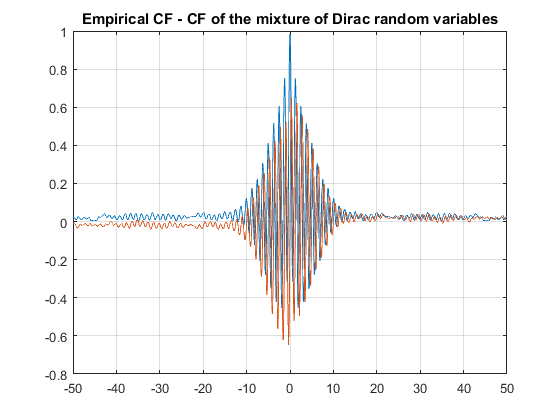
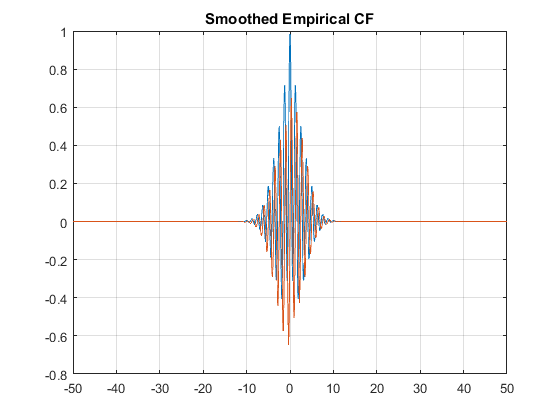
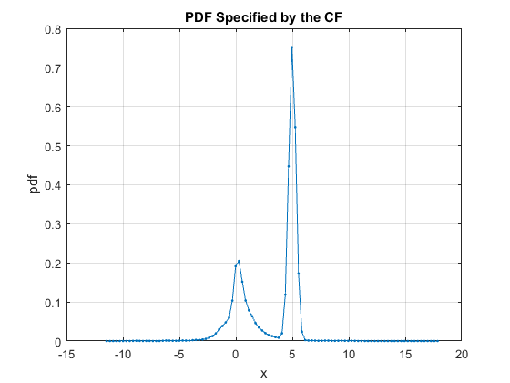
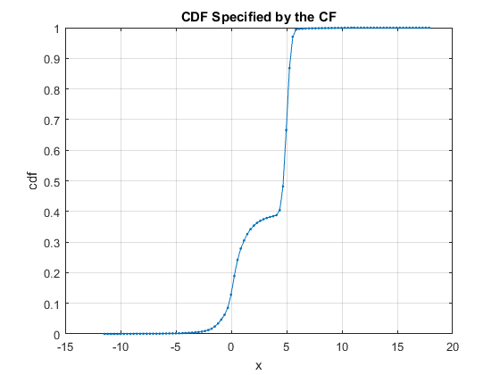
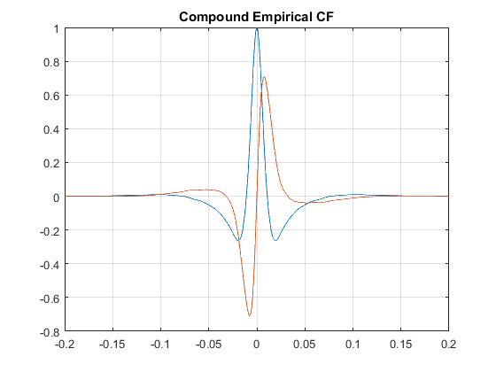
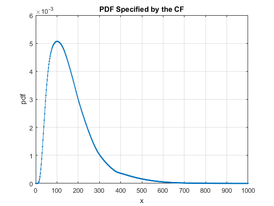
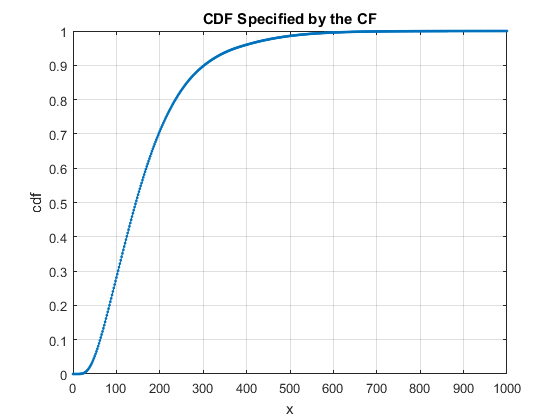

EMPIRICAL CHARACTERISTIC FUNCTION
(c) 2016 Viktor Witkovsky, witkovsky@gmail.com Version: 15-Nov-2016
Contents
- EMPIRICAL DISTRIBUTION
- IV.1.a EXAMPLE: Empirical CF - a weighted mixture of Dirac RVs
- IV.1.b EXAMPLE: Convolution of the ECF and the Gaussian kernel
- IV.1.c EXAMPLE: CF of the compound Empirical-Empirical distribution
- IV.1.d EXAMPLE: PDF/CDF of the compound Empirical-Empirical distribution
- END of the TOOLBOX
EMPIRICAL DISTRIBUTION
cfE_DiracMixture(t,coefs,weights,cfX) evaluates the characteristic function cf(t) of the weighted mixture of independent DIRAC variables, say Y (i.e. nonstochastic constants). In particular, cf(Y) = sum_{j=1}^n weights(j) * cf(coef(j) * X_j), where each X_j represents the Dirac random variable concentrated at the constant 1.
Hence, the empirical characteristic function (ECF) of the random sample X_1,...,X_n is equally weighted mixture of the characteristic functions of the Dirac random variables X_j concentrated at the observed values x_j, i.e. mixture of CFs given by cf_X_j (t) = e^(1i*t*x_j), i.e. cf(t) = cfE_DiracMixture(t,data,1/n) = (1/n) * sum_{j=1}^n e^(1i*t*x_j); where data = (x_1,...,x_n).
cfE_DiracMixture(t,coefs,weights,cf_X) evaluates the compound characteristic function
cf(t) = cfE_DiracMixture(-1i*log(cfX(t)),coefs,weights) = sum_{j=1}^n weights(j) * cfX(t)^coefs(j);
where cfX is function handle of the characteristic function cfX(t) of the random variable X (as e.g. another empirical CF based on observed data of X).
SYNTAX:
- cf = cfE_DiracMixture(t,coefs,weights)
- cf = cfE_DiracMixture(t,coefs,weights,cfX)
clear
close all
IV.1.a EXAMPLE: Empirical CF - a weighted mixture of Dirac RVs
rng(101);
n = 1000;
data = [normrnd(5,0.2,3*n,1); trnd(3,n,1); chi2rnd(1,n,1)];
t = linspace(-50,50,2^10);
weights = 1/length(data);
cf = cfE_DiracMixture(t,data,weights);
figure; plot(t,real(cf),t,imag(cf)),grid
title('Empirical CF - CF of the mixture of Dirac random variables')
 IV.1.b EXAMPLE: Convolution of the ECF and the Gaussian kernel
rng(101);
n = 1000;
data = [normrnd(5,0.2,3*n,1); trnd(3,n,1); chi2rnd(1,n,1)];
bandwidth = 0.25;
cf_DATA = @(t) cfE_DiracMixture(t,data,weights);
cf_KERNEL = @(t) exp(-(bandwidth*t).^2/2);
cf = @(t) cf_DATA(t) .* cf_KERNEL(t);
t = linspace(-50,50,2^10);
figure; plot(t,real(cf(t)),t,imag(cf(t))),grid
title('Smoothed Empirical CF')
result = cf2DistGP(cf);
disp(result)
x: [101×1 double]
cdf: [101×1 double]
pdf: [101×1 double]
prob: []
qf: []
SixSigmaRule: 6
N: 1024
dt: 0.2143
T: 219.4512
PrecisionCrit: 0
myPrecisionCrit: 1.0000e-12
isPrecisionOK: 1
xMean: 3.2069
xStd: 2.4432
xMin: -11.4524
xMax: 17.8661
cf: @(t)cf_DATA(t).*cf_KERNEL(t)
const: 0
isCompound: 0
isCircular: 0
details: [1×1 struct]
options: [1×1 struct]
tictoc: 0.1486
   IV.1.c EXAMPLE: CF of the compound Empirical-Empirical distribution
rng(101);
lambda = 25; nN = 10;
Ndata = poissrnd(lambda,1,nN);
mu = 0.1; sigma = 2; nX = 1500;
Xdata = lognrnd(mu,sigma,1,nX);
cfX = @(t) cfE_DiracMixture(t,Xdata,1/nX);
cf = @(t) cfE_DiracMixture(t,Ndata,1/nN,cfX);
t = linspace(-0.2,0.2,2^10);
figure; plot(t,real(cf(t)),t,imag(cf(t))),grid
title('Compound Empirical CF')
 IV.1.d EXAMPLE: PDF/CDF of the compound Empirical-Empirical distribution
x = linspace(0,1000,501);
prob = [0.9 0.95];
clear options
options.N = 2^12;
options.xMin = 0;
options.SixSigmaRule = 10;
result = cf2DistGP(cf,x,prob,options);
disp(result)
x: [1×501 double]
cdf: [1×501 double]
pdf: [1×501 double]
prob: [0.9000 0.9500]
qf: [302.2570 374.6064]
SixSigmaRule: 10
N: 4096
dt: 0.0052
T: 21.1406
PrecisionCrit: 1.1393e-27
myPrecisionCrit: 1.0000e-12
isPrecisionOK: 1
xMean: 168.5132
xStd: 104.8858
xMin: 0
xMax: 1.2174e+03
cf: @(t)cfE_DiracMixture(t,Ndata,1/nN,cfX)
const: -3.4398e-39
isCompound: 0
isCircular: 0
details: [1×1 struct]
options: [1×1 struct]
tictoc: 6.9702e-04
 